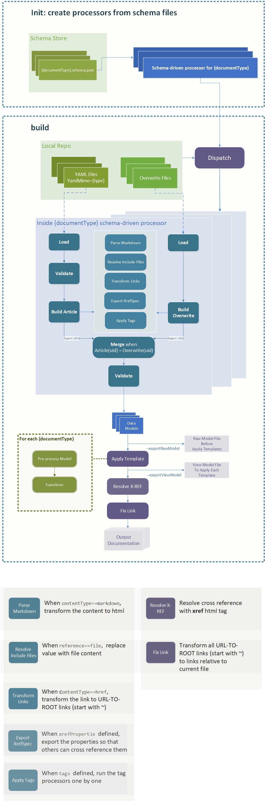

Schema-driven Document Processor(SDP) Design Spec
1. Overview
DocFX supports different document processors to handle different kinds of input. With a new data model introduced in, a new document processor is required to support that model, even most of the code logic is the same for these processors. With this situation considered, a Schema-driven Document Processor (abbreviated to SDP below) is introduced to simplify the process. Togethor with a well defined DocFX Document Schema, SDP is able to validate and process a new data model with no extra effort needed.
2. Workflow
The workflow for SDP is illustrated below. In general, the schema file, with suggested naming convention, has documentType in its name, as {documentType}.schema.json (When title is defined in the schema file, title is considered as the documentType for this schema). docfx loads the schema files from schemas subfolder in template folder, and creates processors for these schema files with per schema file per processor. With data models are processed, docfx applies templates for that documentType to these data model, as details illustrated in Template Introduction and generates output documentation.
